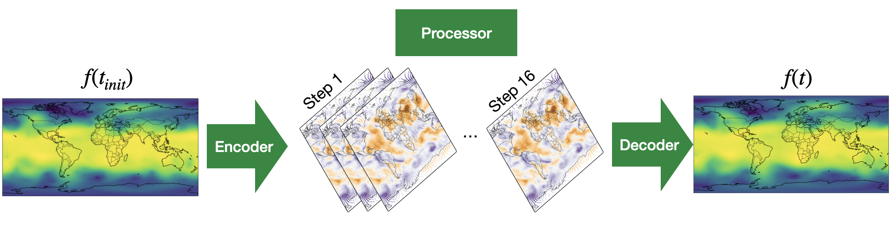

Mechanistic Interpretability Tool for AI Weather Models
What’s going on inside AI weather models? 🌩️

This is a multifaceted question, not only because the numbers within the latent space of the black box appear random, and there are millions of them produced for any one forecast, but because there are various methods already in use, each targeting a different part of the interpretability question. Some methods perturb the initial conditions and look at the effects on the outputs, whilst others alter the inner states, for example by adding an extra layer, and look at the effect.
Needless to say, it’s difficult to answer.
We are tackling this question from the viewpoint of mechanistic interpretability, whereby we aim to connect real features, such as tropical cyclones, with directions of neurons inside the model. What we ultimately want to understand is how these neurons evolve throughout the processor to create a prediction which can beat the best traditional methods.
Our Mechanistic Interpretability Tool for AI Weather Models has been created as a foundational step in the exploration of the latent space of AI weather models, with mechanistic interpretability in mind.
The tool comprises four steps
-
Specify initial parameters
Including forecast date, weather model, and other settings.
-
Select meteorological feature
From a map of the input data, select the region where you want to find the latent-space channels corresponding to a meteorological feature situated there.
-
Extract black-box data
Latent feature vectors are extracted globally, and maps are shown for the channels most activated in the selected region.
-
Further analysis
Cosine similarity analysis compares vectors in the latent space.
Principal Component Analysis finds the directions with the most variance.

The plot above gives a schematic of how to think about the data organised by the tool. Each AI weather model begins on the left, taking in meteorological fields representing the most recent state of the atmosphere and embedding these into a mesh covering the globe. This mesh consists of nodes connected by edges. At each node there is a vector with the length of the latent dimension, with each entry known as a “channel”. Within each stage of the processor — 16 here — these nodes are then updated, often with a residual connection. It is the value of a selected channel at a specified processor step which is then plotted as a global map. Finally, the last processor step is decoded back into meteorological variables.
See the paper linked at the bottom of this page for two case studies in which this tool has led to connections being found between the latent space and midlatitude synoptic-scale waves, as well as specific humidity.
How to use the tool
To use this tool, there’s a simple recipe to follow:

To get started, sample data are also available for you to use.
Are you interested?
If you’re using the tool, or are keen to but don’t know where to begin, please let me know by contacting me at the email address listed in the paper.
Cite as:
Tempest, K.I., Beylich, M., Craig, G.C. (2026). Mechanistic
Interpretability Tool for AI Weather Models. In: Paszynski, M.,
Barnard, A.S., Zhang, Y.J. (eds)
Computational Science – ICCS 2026 Workshops.
ICCS 2026. Lecture Notes in Computer Science, vol 16788.
Springer, Cham.
https://doi.org/10.1007/978-3-032-29915-4_10
📃 Open-access preprint: https://arxiv.org/abs/2604.20467
🧰 Tool: https://github.com/ktempestuous/latent_space_visualiser_weather_models (sample data provided)